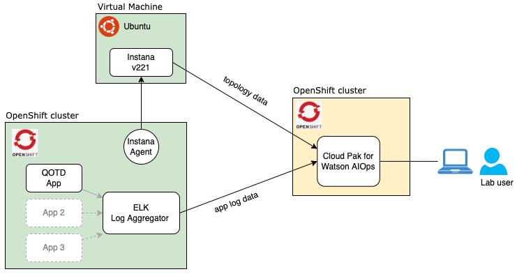
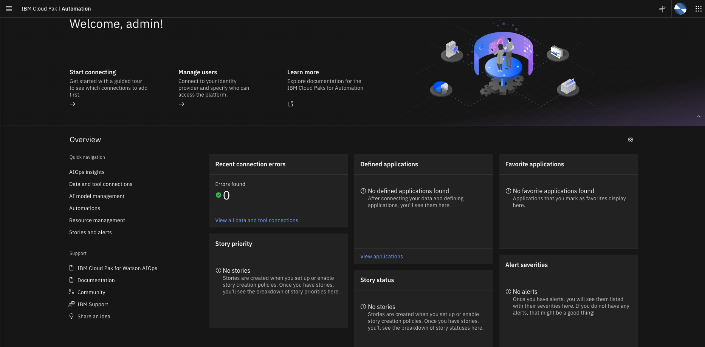
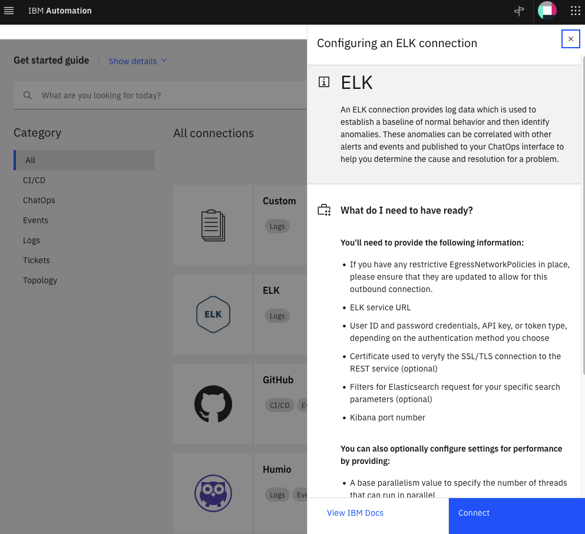

Welcome to the Cloud Pack for Watson AIOps v3.3 Lab
For the complete product documentation, visit this link.
Lab Overview
In this Lab, you will play the role of an IT Operations expert that will configure the Cloud Pack for Watson AIOps (CP4WAIOps) to support IT Operations of a sample business application called QOTD. This application is being "observed" by Instana to pull application performance management metrics including topology. The application logs are being collected by a ElasticSearch (ELK) based log aggregator. These logs are consumed by CP4WAIOps to create a Log Anomaly model. And this model is used to detect application anomalies that will be shown in an incident Story.
These are the different Lab steps:
- Configure the EFK Integration in CP4WAIOps to pull business application logs
- Configure the Instana Integration in CP4WAIOps to pull business application topology
- Update CP4WAIOps Policies to create stories
- Configure CP4WAIOps Log Anomaly Training
- Configure CP4WAIOps Log Anomaly Inference
- Verify CP4WAIOps incident stories
NOTE: The Lab has configuration parameters that you should copy/paste from the tables shown in this web page The Lab call these as Lab Parameters Table. Make sure you copy the full parameter value and not miss any characters.
The following deployment architecture shows the different components that support the Lab:

Lab Terms Definition
Lets define some key CP4WAIOps concepts and terms that will help you understand the Lab:
Events: An event is a record containing structured data summarizing key attributes of an occurrence on a managed entity, which might be a network resource, some part of that resource, or other key element associated with your network, services, or applications. An event may or may not indicate something anomalous and is a point-in-time, immutable statement about the managed entity in question.
Alerts: Alerts are created when one or more events indicate an anomalous condition. Alerts represent an ongoing anomalous condition against a single managed entity. Unlike events, alerts might evolve over time as the condition changes. Alerts have a start and an end time. The creation and evolution of alerts are informed by events. CP4WAIOps automatically correlates alerts to determine what alerts are likely to share a common cause. This is determined based on a combination of:
-
Scope-based correlation - Any alerts which have the same value for the resource field are correlated.
-
Temporal correlation - The system continually analyzes past alerts to determine which alerts tend to frequently co-occur. When these alerts occur together again, they are correlated.
-
Topological correlation - Any alerts which refer to resources within the same Resource group are correlated.
Stories: Stories represent the context around an incident which is currently severely impacting IT Operations. This includes all alerts that are related to the incident and information about how the affected resources are related. The creation and evolution of stories are informed by alerts. Stories can help build the understanding of the current situation and also drive the remediation steps. In other words, stories represent an IT Operations incident and are categorized by priority from 1 (high) to 5 (low).
Policies: Policies are rules that contain a condition and a set of actions that can be manual or automated. They can be triggered to automatically promote events to alerts, reduce noise by grouping alerts into a story, and assign runbooks to remediate alerts. Each policy has an execution priority number which is determines which policy runs first.
Runbooks: A runbook is a controlled set of automated and manual steps that support system and network operational processes. A runbook orchestrates all types of infrastructure elements, such as applications, network components, or servers. We can also use runbooks to document standard procedures that can be leveraged by IT operations.
Actions: Actions are the collection of several predefined steps into a single automated tested entity that can be shared by multiple runbooks. Actions improve runbook efficiency by encapsulating procedures and operations.
Connecting to the CP4WAIOps console
Lets start by connecting to the CP4WAIOps console. Get the URL and login credentials from the Lab Parameters Table. You will see the console home page as shown below.

Configure the EFK Integration
EFK is a variant of ELK (Elasticsearch, Logstash, and Kibana). EFK is a suite of tools combining Elasticsearch, Fluentd, and Kibana that functions as a log aggregation tool. To simplify the installation and configuration effort for installing the different components of the EFK stack on OpenShift, we leverage the OpenShift Logging library from OpenShift. OpenShift customers that prefer not to spend part of their budget on a commercial log aggregator such as Humio, Splunk, or LogDNA, more than likely use the OpenShift Logging library.
To have AI Manager collect logs from the EFK installation that leverages the OpenShift Logging library, you need to define an EFK integration. The lab will provide the values that you should use for defining the EFK integration.
From the Home page, under Overview clik on Data and tool connections on the left side of the page. Click on the Add connection button on the top right. On the ELK card, select Add connection. Take a moment to read the connection overview on the right side slider, then click on Connect, as shown in the following screen.

Complete the ELK, Add connection form, with the following values:
-
Name: Name of the ELK integration, for exampleEFK for QOTD. -
Description: Leave it blank. -
ELK service URL: Get the service URL for the EFK installation from the Lab Parameters Table. -
Kibana URL: Get URL for Kibana from the Lab Parameters Table. -
Authentication type: Set this value toToken. -
Token: Get the token from the Lab Parameters Table. -
Certificate: Leave it blank. -
Filters: Don't change it. -
Time zone: Don't change it. -
Kibana port: Type443. -
Base parallelism: Don't change it. -
Sampling rate: Don't change it.
Click on the Next button.
Field mapping: Use the mapping shown below instead of the default mapping provided on the ELK integration. Make sure you see theValid JSON configurationmessage after that:
{
"codec": "elk",
"message_field": "message",
"log_entity_types": "kubernetes.container_image_id, kubernetes.host, kubernetes.pod_name, kubernetes.namespace_name",
"instance_id_field": "kubernetes.container_name",
"rolling_time": 10,
"timestamp_field": "@timestamp"
}
- Click on the
Test Connectionbutton and confirm you get Test Succeded
Click on the Next button.
-
Data flow: Turn this on. -
Mode: Select theHistorical data for initial AI trainingoption using the dates listed below. CP4WAIOps will ingest one day of historical application log data (stored in the log aggregator) that we know in advanced that can be used as a "reference" for a normal day because no major IT incident happen. We will use this data later for Log Anomaly training.- Start date: May 8, 2022
- End Date: May 8, 2022
-
Source parallelism (1-50): Don't change it.
The following screenshots show the form update flow as guidance (note that config values may be different in the screenshots, follow the previous instructions instead)


Finally, click on the Done button. After some time, you will see the message Connection completed. IBM Cloud Pak for Watson AIOps has successfully processed your request and the ELK integration page will show the Data Flow Status as Running as shown below:

After around 15 minutes, it will stop pulling the data and the Data Flow Status will change to Finished as shown below. Don't wait. Move to the next step in the meantime.
Configure the Instana Integration
The CP4WAIOps will consume topology information from Instana therefore we will configure the integration between the CP4WAIOps and Instana.
Lets verify first that there is no topology data in the system. From the Home page, clik on Resource management under Overview on the left side of the page. On the Resource management page, make sure there are no Applications, Resource groups nor Resources defined, as shown below

Now, lets define the Instana integration. From the Home page, clik on Data and tool connections under Overview on the left side of the page. Click on the Add connection button on the top right. On the Instana card, select Add connection. Take a moment to read the connection overview on the right side slider, then click on Connect, as shown in the following screen.

Enter the following Add connection information:
-
Name: The display name of your connection, for exampleInstana connection. -
Description: An optional description for the connection. -
Endpoint: Get the URL for the Instana Endpoint from the Lab Parameters Table. -
API Token: Get the API Token from the Lab Parameters Table. -
Deployment options: Selectlocal(Note that it is possible to deploy an Instana conection gateway remotely, but in this lab we will deploy in the samelocalcluster).
Click Next.
Enter the following Collect topology data:
-
Enable data flow: Set this toggle button to on (green). -
Time window(seconds): Leave as it is. This is the windowSize within the Instana API. -
Connection Intervals(seconds): Leave as it is. This is how frequently to run the job to collect topology. -
Application name allowlist pattern: This allows to select from the set of applications that Instana is "observing" which one we will pull data from. In this Lab, we will pull topology data from a single application called qotd. Type inqotd. -
Import Instana application perspectives as Cloud Pak for Watson AIOps applications: Make sure this toggle button is set toon(green). This option will save us some time as we don't need to manually create in CP4WAIOps an application that group the topology resources that we pull from Instana. In CP4WAIOps, an application represents a group of resources put together.
Click Next.
Enter the following in Collect event data:
Enable data flow: Slide this toggle button to off (grey). We will not collect event data in this Lab.
Click Next.
Enter the following in Collect metric data:
Enable data flow: Slide this toggle button to off (grey). We will not collect metric data in this Lab.
Click Done.
Now, lets verify that CP4WAIOps actually received topology data.
From the Home page, clik on Resource management under Overview on the left side of the page. On the Resource management page, you will see a new application defined called qotd as shown below:

Click on the application qotd and you will see the topology resources related to this application as shown in the picture below. Feel free to zoom-in to see details.

Review and Update CP4WAIOps Policies
Now, lets take a look at the automations page in CP4WAIOps. By creating automations, we can proactively set up actions and policies to detect and remediate events.
From the Home page, clik on Automations under Overview on the left side of the page. In this page, we can manage Policies, Runbooks and Actions (we will see Stories later in the Inference section of the Lab)
Under the Policies tab, we can see a list of system predefined policies that support a number of features in CP4WAIOps. We will review and enable a predefined policy that create stories:
-
Click on the Tag pull down filter and select
Storyto only show the Story related policies. -
Change the state of the
Default story creation policy for all alertspolicy from Disabled to Enabled by clicking on the State slider. We need to enable this policy so we can see stories being created later in the Inference section of the Lab. -
This Policy will basically create a new Story for every new Alert regardless of the severity of the Alert. Click on the policy name to see the policy details on the right of the page.
-
Click on the
Journaltab to see the updates done so far to this policy. -
Click on the
Specificationtab to see the actual steps or logic of the policy.
That's all we need to do to enable this policy.